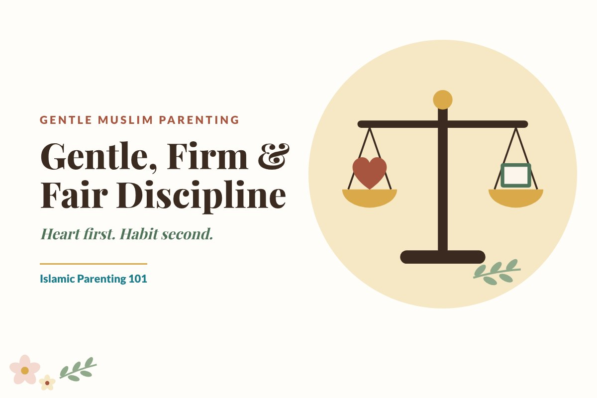

Part of the guide: Gentle Parenting in Islam: The Complete Guide for Muslim Moms
How to Discipline a Child in Islam: Gentle, Firm and Fair

Your eight-year-old has just slammed the door, shouted that he “hates” his sister, and refused to say sorry. You feel your own anger rising. Part of you wants to match his volume. Another part remembers that you want to raise a good Muslim child, not a frightened one. So what does discipline in Islam actually look like?
The word discipline comes from “disciple,” meaning a student: to teach, not to punish. That is exactly the heart of Islamic discipline (ta’dib). It means guiding a child toward good character with wisdom, patience and fairness. This article shows you what the Prophet ﷺ did, what he never did, and a practical set of tools you can use today. (This article is part of our guide Gentle Parenting in Islam.)
Discipline Means to Teach, Not to Hurt
Allah describes the way of calling people to what is right: “Invite to the way of your Lord with wisdom and good instruction” (Quran 16:125). Wisdom and good instruction: two things that need thinking, not shouting.
The Prophet ﷺ’s own example is clear:
- Aisha (RA) said he never hit anything with his hand, neither servant nor woman, except in the cause of Allah (Sahih Muslim).
- Anas (RA), who served him as a boy, said that the Prophet ﷺ never said “Uff” to him, and never asked, “Why did you do that?” about something he’d done (Sahih al-Bukhari and Sahih Muslim).
- When a young child, al-Hasan, picked up a date from the charity pile and put it in his mouth, the Prophet ﷺ said gently, “Kakh, kakh! Throw it out. Don’t you know we don’t eat from charity?” (Sahih al-Bukhari and Sahih Muslim). A short correction, spoken kindly.
- When a Bedouin urinated in the mosque and the companions rushed at him, the Prophet ﷺ said, “Leave him,” then had water poured on the spot and taught the man softly (Sahih al-Bukhari and Sahih Muslim).
Notice the pattern: stop the harm, teach the lesson, keep the dignity.
A Word About Hitting
Parents often ask about the narration regarding children and prayer in Sunan Abi Dawud, which mentions discipline at ten. Scholars discuss how this is understood, and many contemporary scholars emphasise that it must never involve harm, anger, injury or humiliation. Modern child-development research also consistently links physical punishment with more aggression and worse outcomes, not better behaviour. Given the Prophet’s ﷺ example above, we encourage parents to build discipline on the tools in this article. If you want a ruling for your specific situation, please ask a qualified scholar you trust.
The Gentle-and-Firm Framework
Use this four-step shape whenever your child makes a wrong choice:
- Calm yourself first. You cannot teach while furious. Seek refuge in Allah, pause, sit down (see How to Stop Yelling at Your Kids).
- Connect, then name it. Get down to their level. “You pushed Aisha when she took your book.”
- State the boundary and the reason. “We don’t hurt people. Pushing can hurt her body and her heart.”
- Give the next step or consequence. “Check she’s okay, then tell me what you wanted. Next time, use your words.”
Tools That Actually Work
1. Set clear, simple rules together
Children behave better when they know what the rules are and why. Keep three to five family rules, positively phrased: “We speak kindly,” “We keep our hands gentle,” “We tell the truth,” “We clean up after ourselves.” Write them down, and let older kids help create them.
2. Notice the good
Praise specific effort: “I noticed you shared your snack without being asked. That was generous.” The Prophet ﷺ taught that Allah loves kindness. Children repeat what is noticed and appreciated.
3. Use natural and logical consequences
A consequence works when it is connected, calm and brief:
| Behaviour | Connected consequence |
|---|---|
| Throws a toy | The toy goes on the shelf until tomorrow |
| Spills on purpose | Helps clean it up |
| Won’t leave the park | We leave without extra time next visit |
| Rudeness to a sibling | Helps make it right: a kind note, a favour, an apology |
| Misuses the tablet | Loses tablet time for the rest of the day |
Avoid consequences that are huge (“no Eid for a year”), unrelated, or announced in anger. State them calmly: “Because you threw the ball in the house, the ball is going to rest until tomorrow.”
4. Give a calm-down space (not a punishment)
A “calm corner” with a cushion, a book and a soft toy teaches regulation: “Let’s take a break until we’re both calm, then talk.” Stay close for younger children. Time away from a loving parent is different from isolation. For toddlers, see Toddler Tantrums: A Gentle Islamic Approach.
5. Offer choices
Children resist commands but cooperate with choices. “It’s time to leave. Would you like to walk to the car or hop like a bunny?”
6. Repair and apologise
After a wrong, help the child fix it: say sorry, make something right, do a kind act. And if you overreacted, say so. Apologising to your child teaches humility and honesty.
7. Say “no” kindly and mean it
A kind “no” holds. “I know you want one more video. The answer is no. It’s hard, and I’m here with you.” Don’t argue or negotiate endlessly. Repeat calmly.
What to Say Instead
| Instead of | Try |
|---|---|
| “You’re so naughty!” | “That choice wasn’t okay. What can you do differently?” |
| “I’m so disappointed in you.” | “I know you can do better, and I’ll help you.” |
| “Wait till your father comes home!” | “Let’s sort it out now, calmly.” |
| “Stop crying or I’ll give you something to cry about.” | “It’s okay to cry. I’m here when you’re ready.” |
| “Why can’t you be like your brother?” | “I see you’re finding this hard. Let’s try together.” |
Discipline by Age
- Toddlers (1–3): Redirect, remove, repeat. Use short words: “Gentle hands.” They can’t reason yet, so prevention and routine matter most.
- Little kids (4–7): Simple rules, short consequences, lots of praise, visual charts.
- Older kids (8–12): Let them help decide consequences. Discuss fairness and intention (niyyah).
- Teens (13+): Collaborate. Agree on boundaries, explain your concerns, and let natural consequences teach. Correct privately, never in front of friends.
Common Mistakes
- Inconsistency. Rules that change every day confuse children. Agree with your spouse on a few key rules.
- Shaming. Calling a child bad hurts their sense of self. Address the action.
- Too many warnings. Give one clear warning, then follow through.
- Punishing in anger. Wait. If you need ten minutes, take ten minutes.
- Forgetting connection. After every correction, reconnect with a hug or kind word.
- Comparing siblings. The Prophet ﷺ said, “Fear Allah and be fair to your children” (Sahih al-Bukhari and Sahih Muslim).
When It’s More Than Usual Misbehaviour
If your child shows extreme aggression, constant defiance, signs of anxiety, difficulty focusing, or behaviour that worries you at school, talk to a paediatrician, a school counsellor or a child psychologist. Many behaviours that look like “naughtiness” are actually unmet needs or developmental challenges, and early support helps. Seeking help is a form of taking the means.
Your One Step This Week
Choose one situation that repeats in your home, perhaps leaving the playground or screen-time endings. Plan a calm script and a fair consequence, tell your child in advance, and follow through gently for one week.
For a step-by-step approach, scripts and a full chapter on discipline, see my book Hearts Before Habits. You can also read Islamic Parenting: The Complete Guide for the bigger picture, and grab the free family routines printable to keep rules visible at home.
Get the free Calm Mama Starter Kit
4 printable cards for calmer days: phrases, Sunnah calm-down steps, a bedtime routine and a weekly planner.

This article draws on Hearts Before Habits — a complete Islamic parenting guide with scripts, du'as, printables and a 30-day plan.
See the book Free printables Recommended booksKeep reading

Gentle Parenting in Islam: The Complete Guide for Muslim Moms
Gentle parenting in Islam explained — what the Quran and Sunnah teach about mercy, boundaries and discipline, with real scripts for everyday moments.
Read the article →
Toddler Tantrums: A Gentle Islamic Approach for Muslim Moms
Toddler tantrums in Islam — why they happen, what the Sunnah teaches about patience and mercy, and a calm step-by-step plan with scripts for ages 1–4.
Read the article →
How to Stop Yelling at Your Kids: 7 Sunnah Steps
How to stop yelling at your kids, the Prophetic way — 7 Sunnah steps to calm down before you correct, with real scripts for tired Muslim moms.
Read the article →